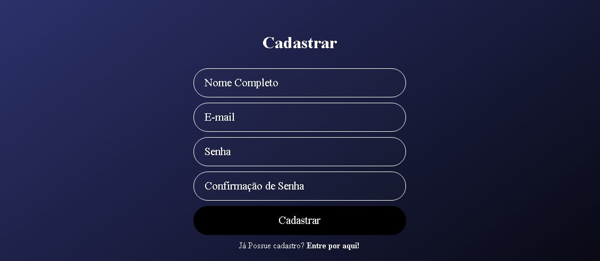
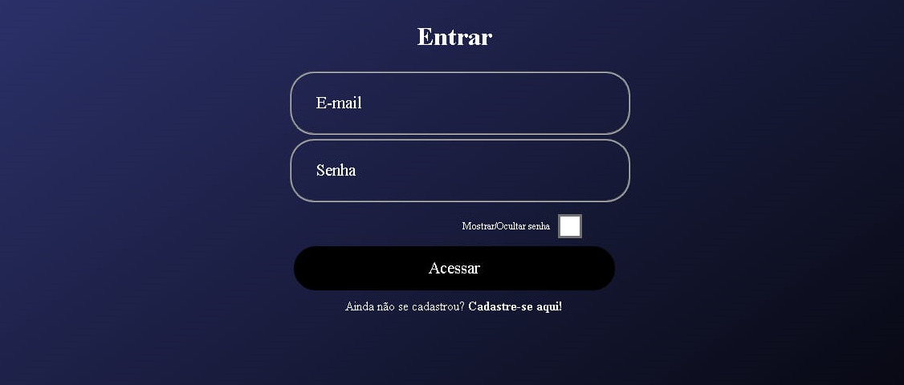
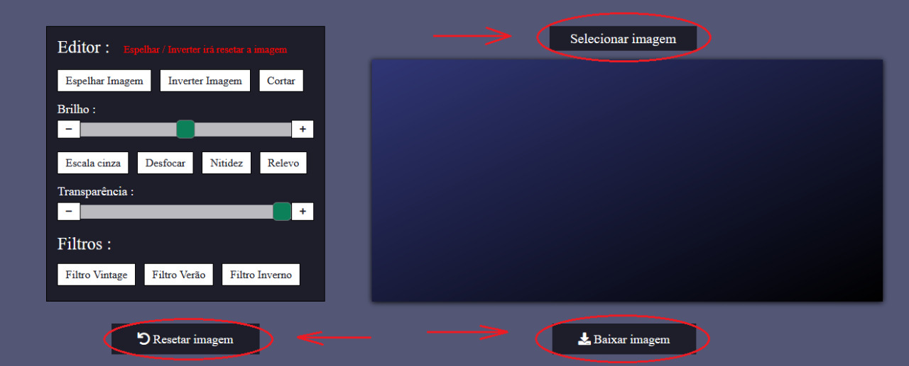

Passo 1/4 - Home
Ao se localizar na página Home ,para acessar o editor clique em "Cadastro | Login"
Passo 2/4 - Cadastro

Insira suas informações pessoais
para concluir o cadastro
Passo 3/4 - Login

Agora , faça login utilizando as informações preenchidas durante o cadastro
Passo 4/4 - Editor

Agora , ao acessar o editor selecione as imagens que deseja alterar ,faça as edições disponíveis e necessarias e baixe a imagem em sua máquina , caso seja feito alguma edição indesejável clique em Resetar Imagem
❮
❯